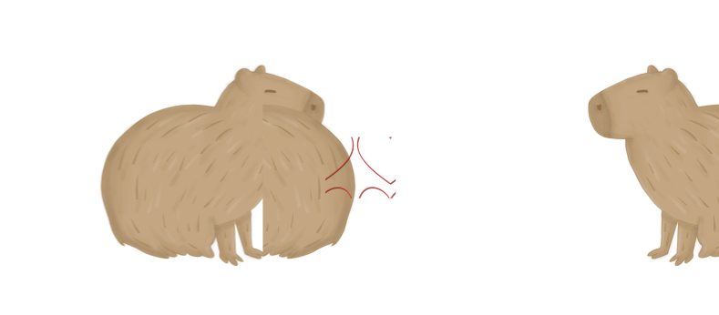
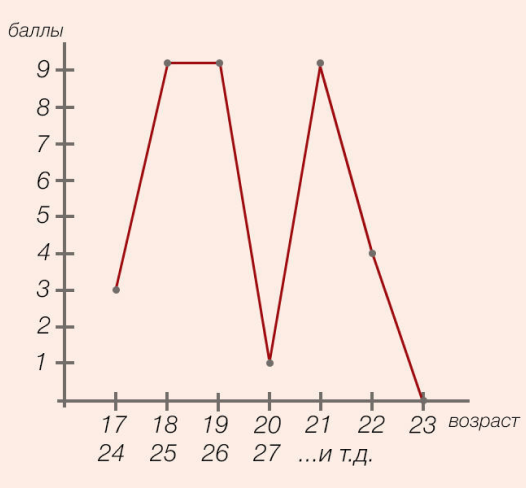

Узнай, в каком возрасте завести капибару
1. Пишем свою дату рождения. Например, 20.06.1990
2. Потом умножаем день и месяц на год: 2006*1990 = 3991940
3. Берем лист и рисуем график: линия вертикальная идет до 9, линия горизонтальная - это
линия
возраста. Начинаем с 17 лет до 23 и добавляем ряды ниже.
4. Теперь начинаем проводить перпендикуляры к возрасту. Смотрим, где наивысшая точка.
0
